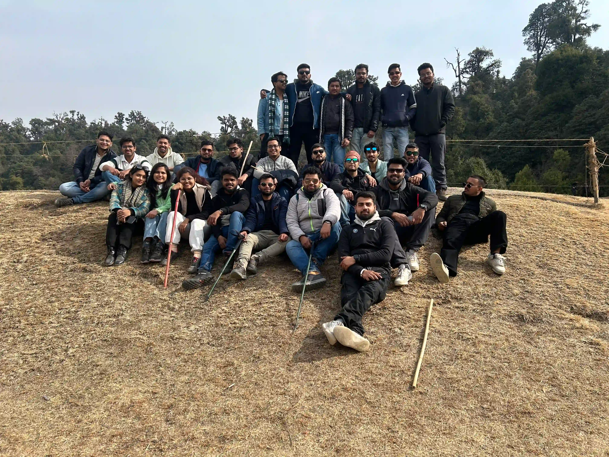
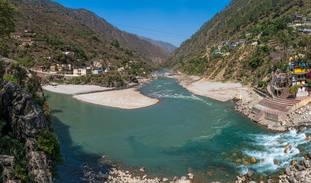

About This Experience
05 Days 04 Nights
Best Season Winter (Nov,Dec,jan) Spring(feb,March,April)
Chopta, Uttarakhand
In the laps of the mighty Himalayas in the Garhwal region of Uttrakhand lies
‘Chandrashila’ – the
summit of Chandranath Parvat. At an elevation of approximately 13,000 feet above sea level, the
Chandrashila Summit is undisputedly one of the most sought after treks in Uttarakhand. With
easy accessibility, it draws trekkers, photographers (Insta-worthy shots guaranteed!), tourists,
wanderers, history enthusiasts, bird watchers or simply someone who is just searching for peace,
tranquility and rejuvenation. The Tungnath temple of Panch Kedar, in particular, offers a
mesmerizing panoramic view of the majestic Himalayan peaks like Nanda Devi, Trisul, Kedar Peak,
Bandarpunch and Chaukhamba.
This trek takes one through bewitching meadows and rich rhododendron trails. The scent of
deodar trees envelops you – a veritable Bird Lovers/Watchers paradise. For those with a keen
eye, you will de nitely have a chance to spot some rare species of birds. So keep your binoculars
ready.
The grade of this trek is easy to moderate, and is defnitely recommended for novice trekkers as
well as experienced ones. It will most likely emerge as a perfect start to your lifelong tryst with
the Himalayas.
Day 0: Journey from Delhi to
Chopta via Rishikesh
Bus volvo
Stay not Applicable
Meal not applicable
- Distance: 450 km
- Duration: 13-14 hours
- Activities: The journey starts from Delhi. Time is of the essence in
a trekking experience.
Hence, we advise our travellers to assemble at Pick up Point . Chopta is 450 km
away from Delhi and takes approximately 14 hours to reach. Route -We make our
way through Meerut, Muzaffarnagar, Roorkee, Haridwar, Rishikesh, Devprayag,
Srinagar, Rudraprayag, Ukhimath before reaching Chopta the following day. The
journey to Rishikesh is an overnight one, after that we buckle up for another 8
hours of a little strenuous yet stunning mountain drive! Most part of the journey
traverses the mountain side, with the river flowing below you. (Don’t forget to
take pictures at the confluence of Alaknanda and Bhagirathi rivers at Devprayag)
Day 1:Arrival at Chopta
Bus volvo
Stay not Applicable
Meal not applicable
- Distance: 35 km
- Duration: 8-9 hours
- Activities: About 35 km a er Rudraprayag, we take the road to
Kedarnath. You will continue
traveling on this road to arrive at Chopta via Agastyamuni (named after the
famous saint Augustya and also a small market place for the vicinity villages) and
Ukhimath (A tiny hamlet also known for being the winter seat of Kedarnath). The
estimated arrival time is around lunch. Long journeys can be exhausting for
some hence this fairly early arrival gives you time to relax and rejuvenate and for
those not too tired from the journey it is a picturesque campsite, an eye candy
for the shutterbugs. You can go around the campsite and explore the trails
around. The forests around here appear like those straight out of a movie. Early
to bed and early to rise is definitely what we prefer. We advise our travellers to
get proper rest before we get up, close and personal with Chandrashila also
known lovingly as the Moonpeak the following day.


Day 2: Trek from Chopta to Chandrashila via Tungnath.
Bus volvo
Stay not Applicable
Meal not applicable
- Distance: 3.5 km
- Duration: 30 min
- Activities: Up, Uppity Up! As we gear up for the most enthralling
day of the Chopta
Chandrashila trek we attempt to climb the summit which is one of the most
captivating and unparalleled of any summits that you might have witnessed. (If
the weather gods permit). This reminds us there are various legends associated
with this place. According to a popular folklore, this is the place where lord Rama
meditated after defeating the demon-king Ravana. Another legend says that
moon-god Chandra spent time here in penance. The trek from Chopta to
Tungnath is approximately 3.5 km in distance and a further ascend of 1.5 km
steep ascend leads to the summit of Chandrashila. The trail till Tungnath from
Chopta is a well paved cemented trail and further from Tungnath to
Chandrashila, the trail becomes a little rickety.
For those who are ardent lovers of history - The Tungnath Temple is one of the
Panch Kedar temples and is considered the highest temple of Lord Shiva in the
world. The legend states that sage Vyas Rishi advised the Pandavas that since
they were responsible for killing their own kin the Kauravas during the
Kurukshetra war in Mahabharat, their act could be pardoned only by Lord Shiva.
Lord Shiva being miffed with Pandavas disguised himself as a bull. Parts of this
bull appeared in 5 different places, each of these identified as a Panch Kedar.
The Pandavas built temples at each of these locations to seek penance, worship,
blessings and pardon from Lord Shiva. Tungnath is identified as the place where
the hands were seen. The trek is pleasant but is a very steep climb. It ascends
sharply towards the end.
You can also notice a change in the landscape due to an increase in the altitude.
The tree line ends before Tungnath temple and after that, you may find only
shrubs. It normally takes around 3 hours to reach the Tunganth temple from
Chopta and another 1 hour to reach the Chandrashila summit from the temple.
Once at the top of the peak, you get a panoramic view of the mountains of
Garhwal and Kumaon. The Chandrashila Peak is at an altitude of 4000 meters
above sea level. It offers perfect panoramic views of remarkable peaks of
Uttarakhand such as Kedarnath, Mandani, Chaukhamba, Nanda Devi, Nanda
Ghunti, Hathi, Ghodi, etc.
After capturing some beautiful shots at the summit, the trek back to Chopta is
via the same route taken while ascending. It takes approx. 30 minutes to reach
Tungnath and another 60 -90 minutes to reach Chopta from Tungnath.

Day 3: Chopta to Sari to Deoriatal and Back to Delhi
Bus volvo
Stay not Applicable
Meal not applicable
- Distance: 2.5 km
- Duration: hours
- Activities: The day embarks from Sari which is a small and quaint
village situated at a height
of 6,601 feet. We depart from Chopta early morning at 8 am to reach the village
post breakfast. The trek to Deoriatal is about 2.3 km. The trail is mildly steep and
completely paved with stones. As we walk on the trail, we come across a temple
and a few houses on the way. The site of Deoriatal, like that of Chandrashila, is
steeped in local folklore as well. According to it, the pandavas, once thirsty, had
come to the waters of Deoriatal and had to face a test of wisdom. 1 km into the
trail and we turn around and witness the bird’s eye view of the beautiful Sari
village. There are few shelters available on the trek where one can take a
breather. Though the Deoriatal trek from Sari is easy, it can be a bit tiring for
first-timers. The trail passes through the scenic forest of Rhododendron and
Oak. After reaching the lake, you see a forest check post. The lake is gripped
with forests all around. On a clear sky day the reflection of the surrounding
mountain is caught in the crystal-like waters of the lake. As a result the effect is
strikingly stunning. Trek down to Sari and start your return journey to Delhi with
your heart and soul full. You would reach Delhi early morning the following day

Day 12: Kalpa to Shimla
Bus volvo
Stay not Applicable
Meal not applicable
- Distance: 230 km
- Duration: 8-9 hours
- Activities: Drive back to Shimla. Overnight stay in Shimla.
Day 13: Shimla to Delhi
Bus volvo
Stay not Applicable
Meal not applicable
- Distance: 350 km
- Duration: 8-9 hours
- Activities: Drive back to Delhi. Trip ends
